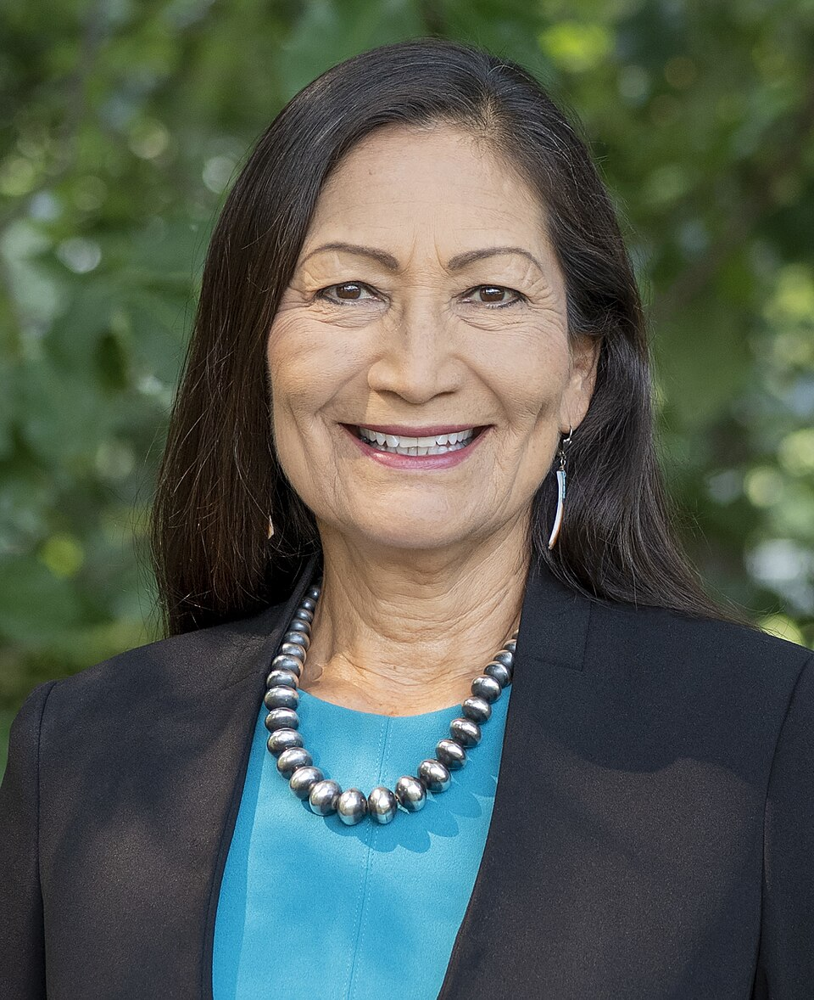
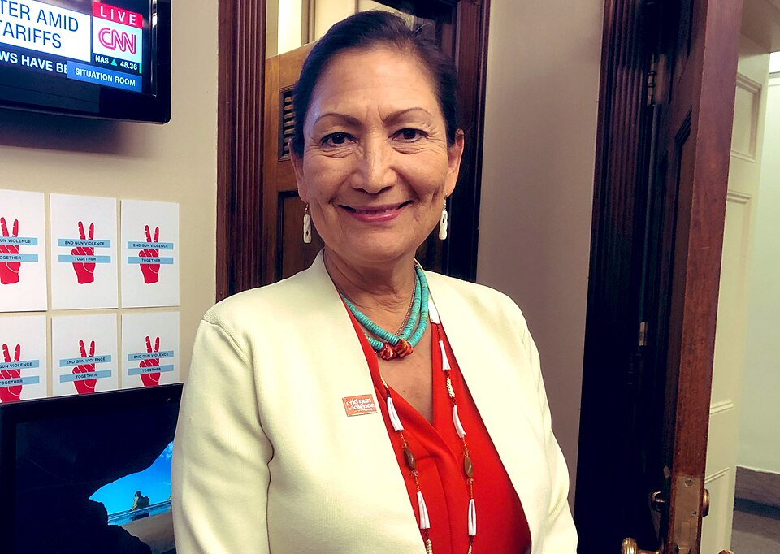
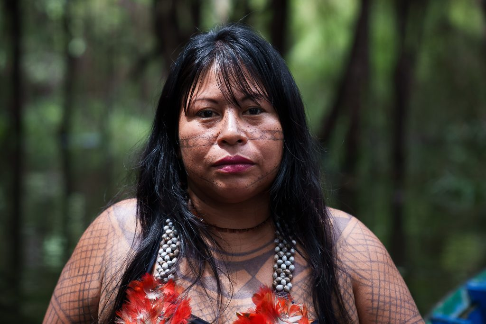

1960
Nasce em Winslow, Arizona, em 2 de dezembro. Sua história familiar e política seria profundamente vinculada ao Novo México e ao Pueblo of Laguna.

“Nós só temos um planeta Terra. Vamos cuidar dele.”
Deb Haaland.
Foto: Wikimedia Commons — Deb Haaland, domínio público.
Identidade indígena, serviço público e representação histórica.

Foto: Wikimedia Commons — Department of the Interior, domínio público.
Debra Anne Haaland nasceu em 2 de dezembro de 1960, em Winslow, no Arizona, e é cidadã do Pueblo of Laguna, no Novo México. Ela descreve sua família como ligada ao território do Novo México há 35 gerações. Filha de uma mulher indígena e de um militar norueguês-americano, viveu em diferentes lugares durante a infância e retornou ao Novo México, onde estudou e construiu sua vida profissional.
Antes de ocupar cargos nacionais, Haaland formou-se na University of New Mexico e concluiu Direito na mesma universidade. Foi mãe solo, empresária e organizadora comunitária. Sua entrada na política tornou visíveis pautas indígenas em espaços de decisão: presidiu o Partido Democrata do Novo México, chegou ao Congresso e, em 2021, fez história ao assumir a Secretaria do Interior dos Estados Unidos.
Nasce em Winslow, Arizona, em 2 de dezembro. Sua história familiar e política seria profundamente vinculada ao Novo México e ao Pueblo of Laguna.
Conclui a graduação na University of New Mexico e, anos depois, obtém o diploma em Direito pela University of New Mexico School of Law.
Preside o Partido Democrata do Novo México, tornando-se a primeira mulher indígena a liderar um partido estadual nos Estados Unidos.
É eleita para representar o 1º distrito congressional do Novo México. Ao lado de Sharice Davids, torna-se uma das duas primeiras mulheres indígenas eleitas para o Congresso dos Estados Unidos.
É confirmada pelo Senado e inicia seu mandato como a 54ª Secretária do Interior, tornando-se a primeira pessoa indígena a ocupar um cargo de secretária de gabinete na história do país.
Lidera o Departamento do Interior, responsável por terras públicas, conservação e relações federais com nações tribais, encerrando sua gestão em 2025.
Representação indígena em espaços historicamente negados.

Foto: Wikimedia Commons — Deb Haaland, domínio público.
Deb Haaland é extraordinária porque rompeu uma barreira histórica: tornou-se a primeira pessoa indígena a liderar um departamento do gabinete presidencial dos Estados Unidos. O marco é especialmente significativo no Departamento do Interior, cuja atuação tem impacto direto sobre terras e comunidades indígenas.
Sua trajetória também mostra que representação é mais do que presença simbólica. Ao chegar ao Congresso e ao gabinete, Haaland levou consigo a experiência de uma cidadã tribal, mãe solo e mulher que conheceu dificuldades econômicas antes de alcançar as mais altas posições do serviço público norte-americano.
Liderança, território, conservação e direitos indígenas.
A presença de Deb Haaland no governo federal ampliou a visibilidade de povos indígenas no centro das políticas públicas dos Estados Unidos. Sua nomeação abriu uma referência poderosa para jovens indígenas e demonstrou que comunidades historicamente excluídas podem ocupar posições de liderança nacional. No Departamento do Interior, sua gestão esteve ligada à administração de terras públicas, à conservação ambiental e à relação do governo federal com nações tribais. Seu legado combina a força do pioneirismo com a defesa de que decisões sobre território, cultura e futuro devem incluir as vozes das comunidades afetadas.
Fontes institucionais e biográficas.
Página institucional que registra Deb Haaland como a 54ª Secretária do Interior, no período de 2021 a 2025. Link: doi.gov/whoweare/past_secretaries.cfm
Comunicado oficial de 17 de março de 2021 sobre o início do mandato de Deb Haaland como Secretária do Interior. Link: doi.gov/node/37037
Biografia apresentada ao Congresso com informações sobre sua trajetória política, origem e marco histórico no gabinete. Link: congress.gov/117/meeting/house/112476/witnesses/HHRG-117-AP06-Bio-HaalandD-20210420.pdf
Perfil biográfico com dados sobre sua origem no Pueblo of Laguna, educação, atuação no Congresso e gestão no Interior. Link: britannica.com/biography/Deb-Haaland
Conheça outras trajetórias de liderança indígena e transformação social.

Jurista e liderança indígena pioneira na política brasileira.
Saiba mais
Liderança indígena brasileira na defesa de povos e territórios.
Saiba mais
Ativista Munduruku reconhecida pela proteção do território.
Saiba mais